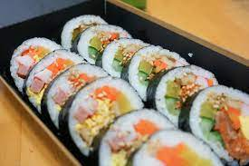

Gimbap

Description
Gimbap is like Korean sushi. It has vegetables, meat and rice, just about everything that's heavenly delicious! It might take a lot of prep work but it's insanely worth it.
Ingredients
- sheets of nori (seaweed)
- cooked rice
- ham, cut into strips
- imitation crabmeat
- carrots
- spinach
- yellow pickled radish
- eggs
- toasted sesame oil
Instructions
- Mix toasted sesame oil with cooked rice
- Boil water and blanch spinach
- Cut carrot into matchsticks and saute it until soft
- Cut radish into strips
- Heat up ham strips and imitation crab meat
- Cook eggs and cut into strips
- Lay out nori sheet, spread rice over 1/3 top of sheet and then lay out ingredients on lower 2/3 of sheet
- Roll the nori sheet, pressing tightly until it's completely rolled all the way
- Repeat until out of ingredients
- Slice the gimbap into slices or eat it whole